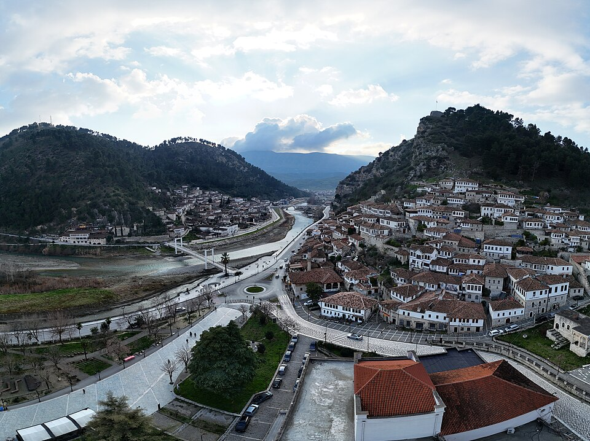
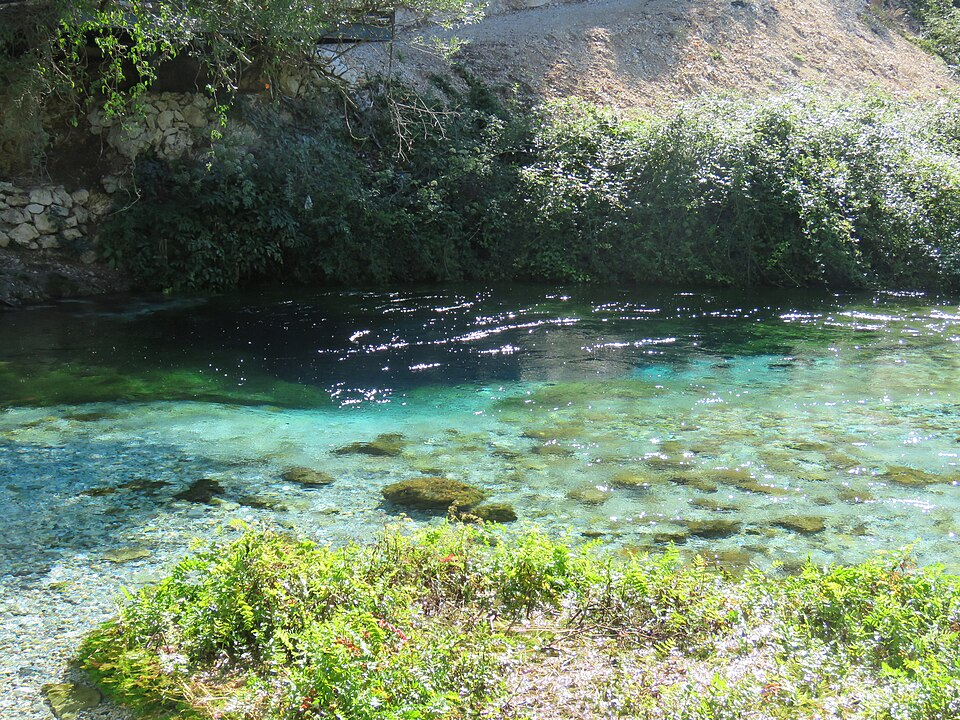
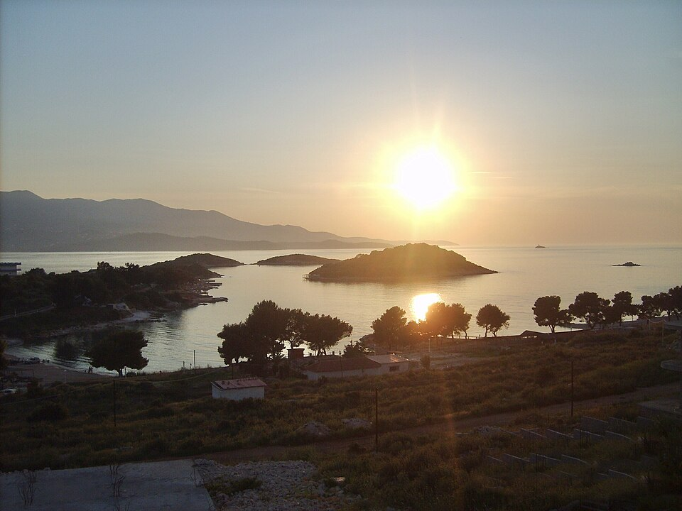
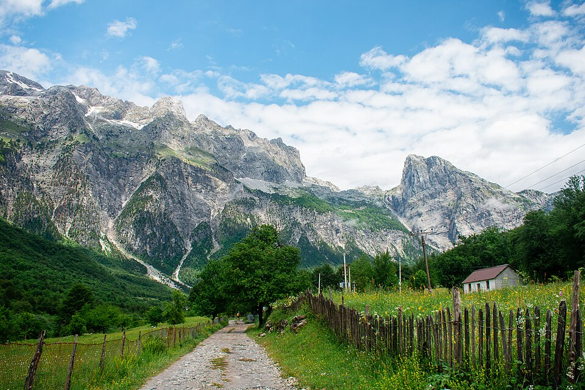

Albania알바니아 Shqipëria
알프스의 산악 마을에서 이오니아해의 해변까지, 문화유산과 관광이 공존하는 나라
- Capital
- 티라나 (Tiranë)
- Language
- 알바니아어
- Currency
- 알바니아 레크 (ALL)

천 개의 창문 도시 베라트Berat, city of a thousand windows
블루 아이 샘The Blue Eye spring
크사밀 해변의 섬들Ksamil islands
알바니아 알프스 테스 계곡Theth Valley, Albanian AlpsExplore Albania
알바니아 더 알아보기
알바니아는 아드리아해와 이오니아해에 맞닿은 서부 발칸 국가다. 북부 알프스의 산악마을과 남부 리비에라, 베라트·지로카스터의 오스만시대 도시유산, 부트린트 고대 유적이 관광·문화의 중심을 이룬다. 알바니아어는 인도유럽어족 안에서 독자 분파로 분류되며, 산업은 관광·농식품·수력·제조·디지털 서비스가 함께 발전하고 있다.


Latest updates
알바니아 최근 뉴스
-
EU 확대 보고서 후속…몬테네그로 내년 6월 조약 서명 목표, 알바니아는 시위 참가자 83명 벌금
유럽웨스턴발칸스(11월 6일)에 따르면 EU 집행위 확대 패키지는 몬테네그로·알바니아·몰도바·우크라이나를 선두주자로 분류했습니다. 마르타 코스 집행위원은 몬테네그로를 선두 중의 선두라고 평가했고, 나머지 협상 분야가 11~12월에 닫히면 2027년 봄 조약 문안을 마무리해 6월에 서명한다는 일정입니다. 크로아티아는 양자 현안 6건 해결을 요구하고 있습니다.
-
EU 확대 패키지, 몬테네그로·알바니아에 첫 가입 로드맵…몬테네그로 연내 협상 마무리 가능, 북마케도니아는 개헌 미이행
유럽웨스턴발칸스에 따르면 집행위는 11월 4일 몬테네그로·알바니아·우크라이나·몰도바에 잠정 로드맵을 제안했으며, 상황에 따라 조정할 수 있습니다. 폰데어라이엔 집행위원장은 한 걸음씩 더 완전하고 강한 연합을 만들고 있다고 말했습니다.
-
EU, 2026 확대 패키지 발표…몬테네그로 “2028년 28번째 회원국”, 알바니아·우크라이나·몰도바에 로드맵
아나돌루통신과 EEAS에 따르면 EU 집행위는 11월 4일 확대 패키지를 채택하고 몬테네그로·알바니아·몰도바·우크라이나에 대해 가입 협상 일정을 담은 로드맵을 제시했습니다. 마르타 코스 확대 담당 집행위원은 몬테네그로가 2028년 EU의 28번째 회원국이 될 궤도에 있다고 말했습니다.